Piezas de carrocería para Hyundai Accent
99 piezas disponibles hoy para Hyundai Accent, cada una con su foto y su código: parrillas (14), guardafangos (9), lámparas traseras (8), covers de halógena (8). Dinos el año de tu carro y te confirmamos si le sirve.
- Garantía de 3 días
- Foto real de cada pieza
- Efectivo, Yappy o ACH
- Lunes a sábado, 8:00 a. m. a 5:00 p. m.
Parrillas para Hyundai Accent 14
 446Accent2012-19 · genérico
446Accent2012-19 · genérico 448Accent2016-22 · original
448Accent2016-22 · original 449Accent2014-19 · original nuevo
449Accent2014-19 · original nuevo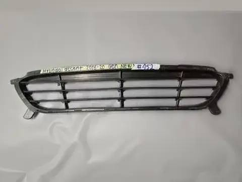
452Accent2016-20 · genérico nuevo 460Accent2018-20 · original
460Accent2018-20 · original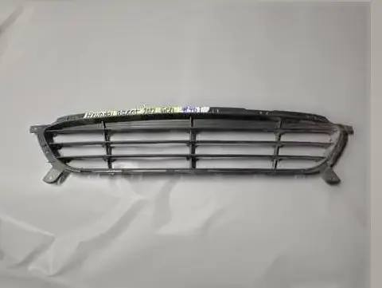
461Accent2011-14 · genérico 462Accent2011-14 · original nuevo
462Accent2011-14 · original nuevo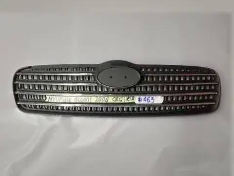
463Accent2008 · original nuevo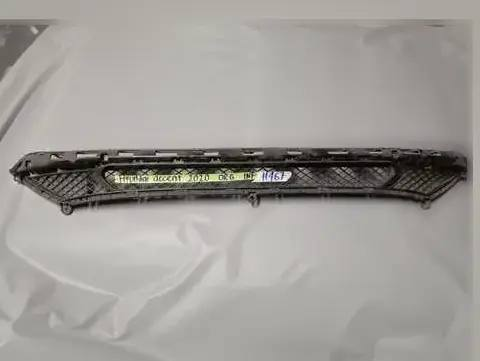
467Accent2018-20 · original 475Accent2018-20 · original
475Accent2018-20 · original 482Accent2018-20 · original
482Accent2018-20 · original 629Accent2022-24
629Accent2022-24 688Accent2023-26
688Accent2023-26 P022Accent2012-15 · genérico nuevo
P022Accent2012-15 · genérico nuevoGuardafangos para Hyundai Accent 9
 GF005Accent2018-20 · lado izquierdo
GF005Accent2018-20 · lado izquierdo GF009Accent2012-2017 · original
GF009Accent2012-2017 · original GF013Accent2015-17 · lado derecho
GF013Accent2015-17 · lado derecho GF015Accent2013-2017 · lado izquierdo · genérico nuevo
GF015Accent2013-2017 · lado izquierdo · genérico nuevo GF018Accent2013-2017 · lado izquierdo · genérico nuevo
GF018Accent2013-2017 · lado izquierdo · genérico nuevo GF019Accent2013-2017 · lado izquierdo · genérico nuevo
GF019Accent2013-2017 · lado izquierdo · genérico nuevo GF020Accent2015-17 · lado izquierdo · genérico
GF020Accent2015-17 · lado izquierdo · genérico GF144Accent2011-17 · lado izquierdo · genérico nuevo
GF144Accent2011-17 · lado izquierdo · genérico nuevo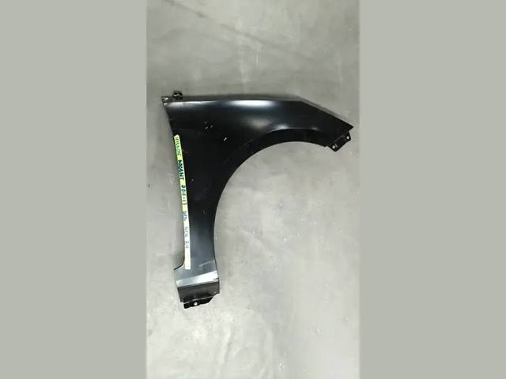
GF145Accent2011-17 · lado derecho · genérico nuevoLámparas traseras para Hyundai Accent 8
 257Accent2015-17 · lado izquierdo · original
257Accent2015-17 · lado izquierdo · original 258Accent2018-20 · lado izquierdo · genérico
258Accent2018-20 · lado izquierdo · genérico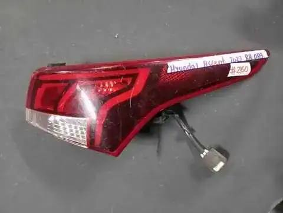
260Accent2023-26 · lado derecho · original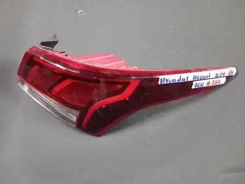
262Accent2023-26 · lado derecho · genérico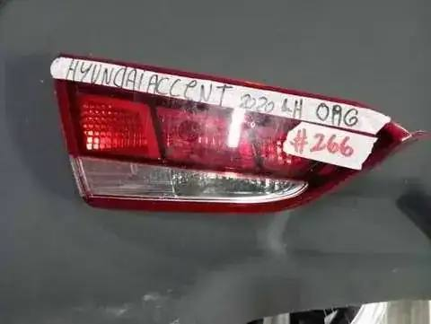
266Accent2018-20 · lado izquierdo · original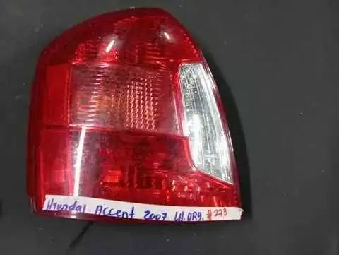
273Accent2007 · lado izquierdo · original LT009Accent Sedán2014-17 · lado derecho · genérico
LT009Accent Sedán2014-17 · lado derecho · genérico LT010Accent2012-17 · lado derecho · original
LT010Accent2012-17 · lado derecho · originalCovers de halógena para Hyundai Accent 8
 CH005Accent2012-17 · lado izquierdo · genérico
CH005Accent2012-17 · lado izquierdo · genérico CH036Accent2012-17 · lado derecho · original nuevo
CH036Accent2012-17 · lado derecho · original nuevo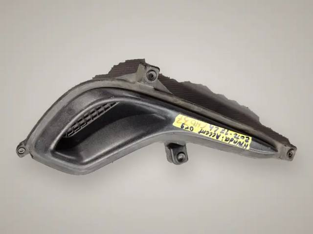
CH037Accent2012-17 · lado izquierdo · original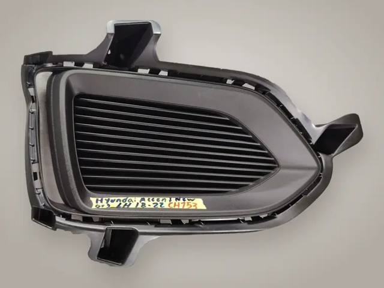
CH153Accent2018-22 · lado izquierdo · original nuevo CH154Accent2018-22 · lado derecho · original
CH154Accent2018-22 · lado derecho · original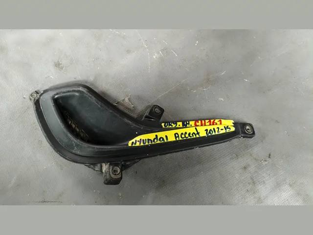
CH161Accent2012-15 · lado derecho · original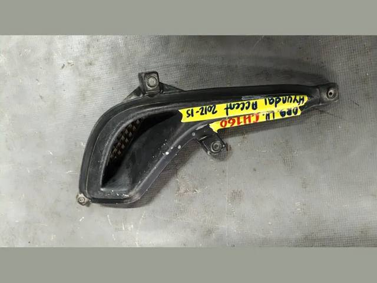
CH160Accent2012-15 · lado izquierdo · original CH167Accent2012-15 · lado izquierdo · original nuevo
CH167Accent2012-15 · lado izquierdo · original nuevoFaros y lámparas delanteras para Hyundai Accent 7
 015Accent2018-20 · lado izquierdo · original
015Accent2018-20 · lado izquierdo · original 017Accent2018-20 · lado izquierdo · original
017Accent2018-20 · lado izquierdo · original 026Accent2023-26 · lado derecho · original
026Accent2023-26 · lado derecho · original 031Accent2023-26 · lado derecho · original
031Accent2023-26 · lado derecho · original 853Accent2023-26 · lado derecho · original
853Accent2023-26 · lado derecho · original LD012Accent2015-17 · lado izquierdo · original
LD012Accent2015-17 · lado izquierdo · original LD014Accent2015-17 · lado derecho · original
LD014Accent2015-17 · lado derecho · originalDefensas traseras para Hyundai Accent 7
 DT037Accent2023-26 · original
DT037Accent2023-26 · original DT039Accent2021-23 · original
DT039Accent2021-23 · original DT040Accent2014-17 · original
DT040Accent2014-17 · original DT041Accent2012-17 · genérico
DT041Accent2012-17 · genérico DT042Accent2012-17 · original
DT042Accent2012-17 · original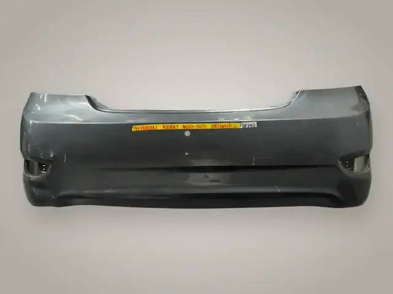
DT043Accent2012-17 · original DT044Accent2021-23 · original
DT044Accent2021-23 · originalHalógenas y faros antiniebla para Hyundai Accent 7
 HA013Accent2012-17 · lado derecho
HA013Accent2012-17 · lado derecho HA014Accent2012-17 · lado izquierdo
HA014Accent2012-17 · lado izquierdo HA057Accent2012-15 · lado derecho
HA057Accent2012-15 · lado derecho HA058Accent2012-15 · lado izquierdo
HA058Accent2012-15 · lado izquierdo HA100Accent / HB202021-26 · lado derecho · original
HA100Accent / HB202021-26 · lado derecho · original HA101Accent / HB202021-26 · lado derecho · original
HA101Accent / HB202021-26 · lado derecho · original HA102Accent / HB202021-26 · lado izquierdo · original
HA102Accent / HB202021-26 · lado izquierdo · originalCubrepolvos para Hyundai Accent 6
 CP022Accent2023-26 · lado izquierdo · original
CP022Accent2023-26 · lado izquierdo · original CP023Accent2011-17 · lado derecho · original
CP023Accent2011-17 · lado derecho · original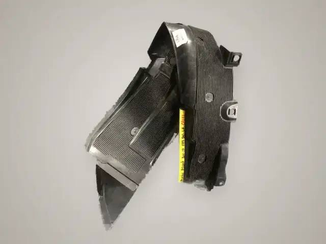
CP032Accent2011-17 · lado izquierdo · original CP060Accent2011-17 · lado izquierdo · genérico
CP060Accent2011-17 · lado izquierdo · genérico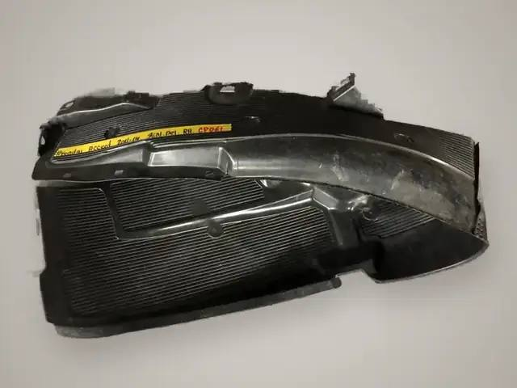
CP061Accent2011-17 · lado derecho · genérico CP062Accent2011-17 · lado derecho · original
CP062Accent2011-17 · lado derecho · originalPuertas para Hyundai Accent 5
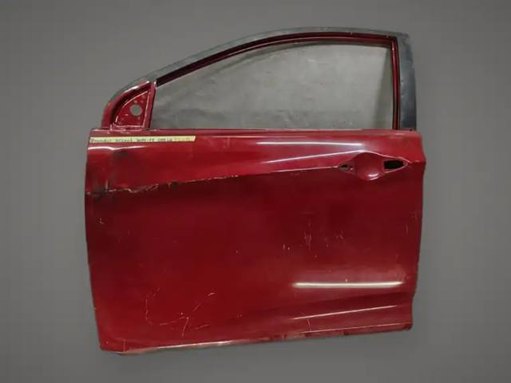
PD012Accent2011-17 · lado izquierdo · original PT021Accent2018-22 · lado derecho · original
PT021Accent2018-22 · lado derecho · original PD011Accent2011-17 · lado derecho · genérico nuevo
PD011Accent2011-17 · lado derecho · genérico nuevo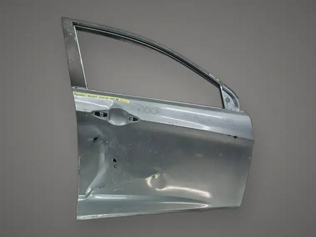
PD010Accent2011-17 · lado derecho · original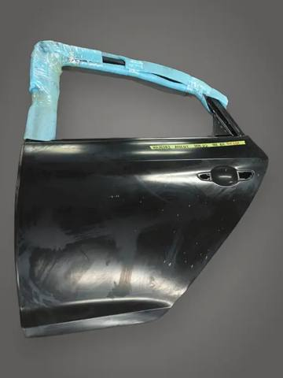
PT064Accent2018-22 · lado derecho · original nuevoCapós para Hyundai Accent 5
 TM016Accent2011-19 · original nuevo
TM016Accent2011-19 · original nuevo TM026Accent2006-10 · genérico
TM026Accent2006-10 · genérico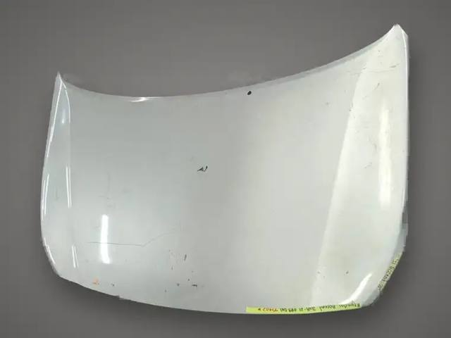
TM027Accent2018-21 · original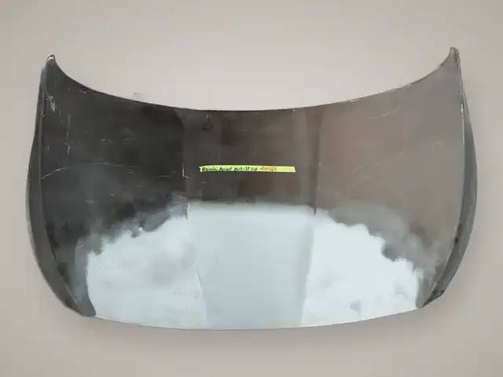
TM064Accent2012-17 · original TM068Accent2015-17
TM068Accent2015-17Refuerzos traseros para Hyundai Accent 5
 R073Accent2018-20 · original
R073Accent2018-20 · original R082Accent2021-23 · original
R082Accent2021-23 · original R089Accent / Solaris2016-19 · original
R089Accent / Solaris2016-19 · original R091Accent2011-17 · original
R091Accent2011-17 · original R093Accent2018-22 · original
R093Accent2018-22 · originalCopas para Hyundai Accent 4
 741Accent
741Accent 744Accent
744AccentVidrios para Hyundai Accent 4
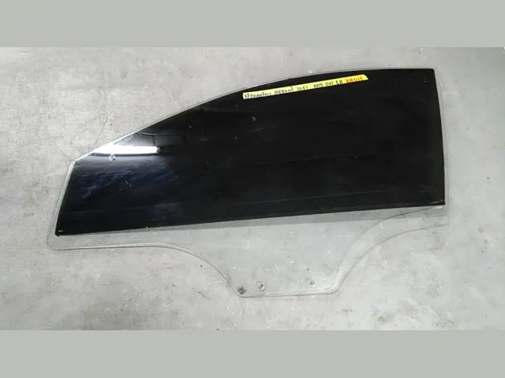
VA013Accent2011-17 · lado izquierdo · original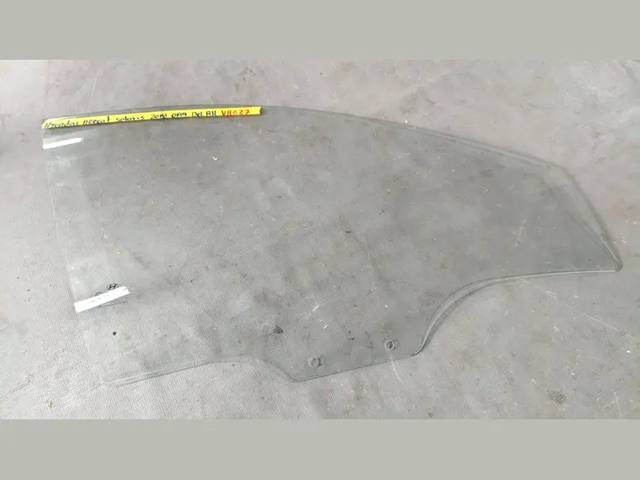
VA027Accent2018-22 · lado derecho · original VA029Accent2011-17 · original
VA029Accent2011-17 · original VA036Accent2018-22 · original nuevo
VA036Accent2018-22 · original nuevo 806Accent C/parrilla
806Accent C/parrilla 807Accent
807Accent 808Accent
808Accent TB007Accent / Solaris
TB007Accent / Solaris TB008Accent
TB008Accent PCh011Accent
PCh011Accent DA003Accent
DA003Accent GFT009Accent
GFT009Accent